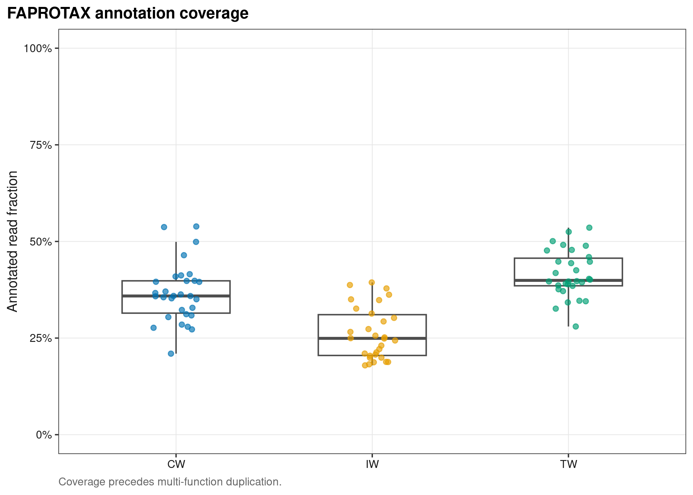
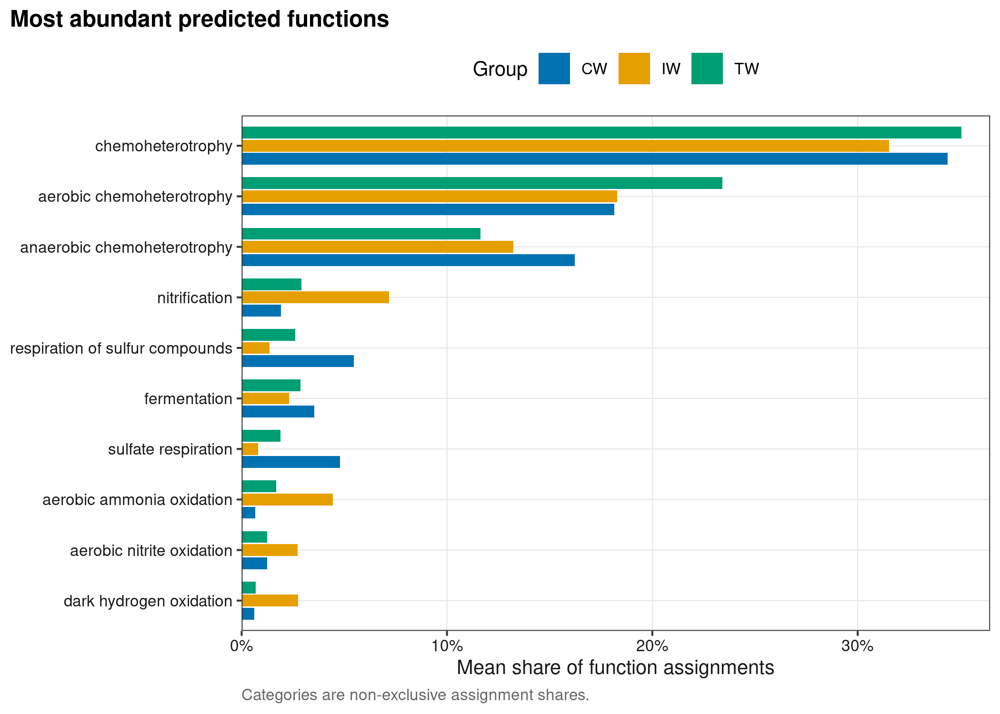
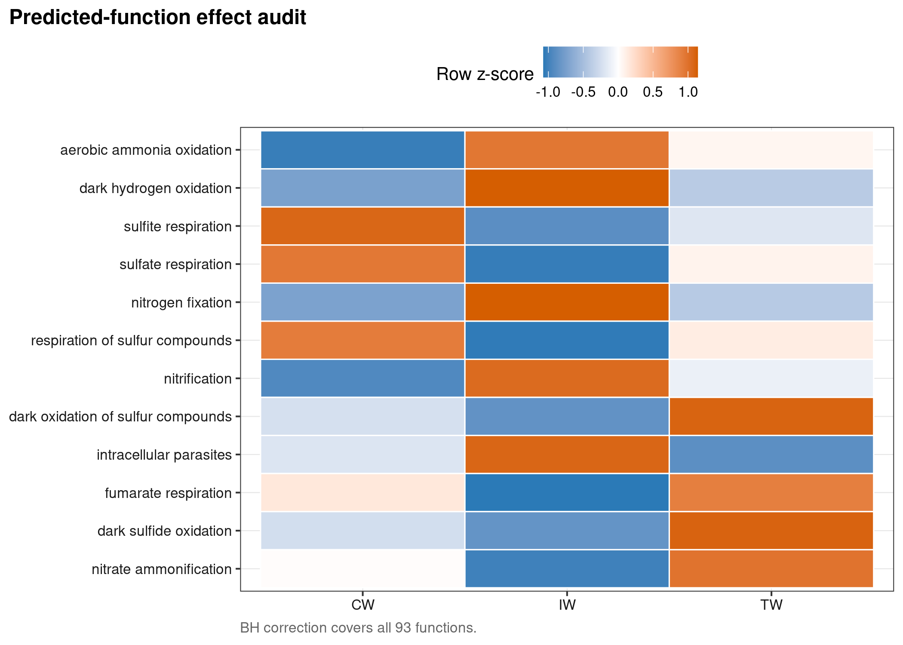
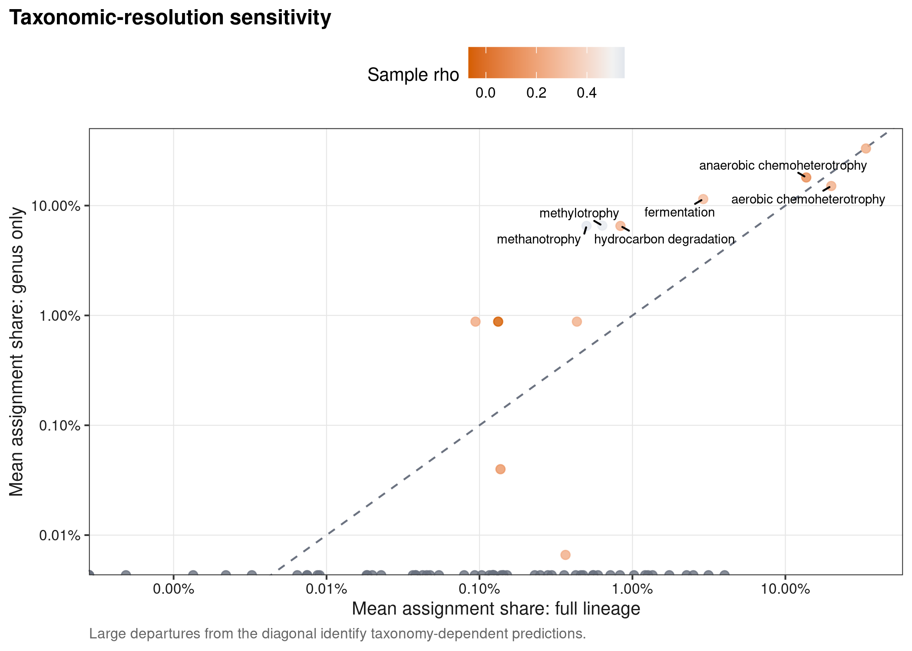

options(timeout = 600)
data_url <- "https://raw.githubusercontent.com/petemeng/microbiome-best-practices/3cb6a817e0c73ab7ecbec1cedc1ad80cbb9ecfaa/"
input_files <- c(
"data/small/metadata.tsv",
"data/small/otutab.tsv",
"data/small/taxonomy.tsv"
)
for (path in input_files) {
dir.create(dirname(path), recursive = TRUE, showWarnings = FALSE)
if (!file.exists(path)) download.file(paste0(data_url, path), path, mode = "wb", quiet = TRUE)
}FAPROTAX、Tax4Fun2 与 BugBase：环境功能类群
功能类群注释依赖数据库规则与分类分辨率
Louca et al. (2016)用 taxonomy–function literature mapping 描述全球海洋微生物功能；Wemheuer et al. (2020)则以 Tax4Fun2 引入 reference-data-based functional prediction 与 functional redundancy index。
重要先给结论
FAPROTAX、Tax4Fun2 和 BugBase 都是从扩增子数据推断潜在功能，不是测到基因、转录本或代谢通量。结果首先受 primer、taxonomy/sequence reference、annotation coverage 与数据库版本约束；主图必须把 coverage 与功能结果并列，论文措辞使用“predicted”或“putative”。
本页使用 microeco 2.0.0 随包分发的真实中国湿地 16S 数据，CW、IW、TW 各 30 个样本。FAPROTAX 数据库版本由运行日志记录；同一个 OTU 可以匹配多个功能，因此功能条目的相对份额是 annotation assignments 的组成，不能解释为互斥细胞比例。
功能占比变化，可能只是可注释部分变了
同一个 OTU 可以贡献给多个功能，因此把所有功能条目归一化得到的是注释赋值的组成，而不是互斥细胞比例。如果某组未注释 reads 更多，或可注释菌携带更多映射条目，这个分母就会改变。应把逐样本覆盖率和功能组成并列，不能只显示已命名功能的 100% 堆叠图。
数据库把已知类群与文献功能联系起来，不代表该样本中的每个成员都具有或正在执行该功能。本例的属级降分辨率敏感性用于观察命名深度如何影响映射；结果不稳定时，应降低功能表述的具体程度。FAPROTAX 条目、Tax4Fun2 基因家族预测和 BugBase 高层表型不是相同测量对象，名称相近也不能合并成投票支持。
下载并读取本次分析的数据
需要 R，以及 ggplot2、ggrepel、microeco、ragg、readr、scales、svglite。本次使用中国湿地的 OTU count 表、分类表和样本信息表。
在一个新建的文件夹中运行以下代码，下载文件后按文中的顺序继续分析：
library(ggplot2)
library(microeco)
set.seed(20260742)
font_pub <- "sans"
pal_pub <- c(
blue = "#0072B2", orange = "#E69F00", green = "#009E73",
vermillion = "#D55E00", purple = "#CC79A7", sky = "#56B4E9",
yellow = "#F0E442", grey = "#6B7280"
)
scale_color_pub <- function(..., values = unname(pal_pub)) {
ggplot2::scale_color_manual(..., values = values)
}
scale_fill_pub <- function(..., values = unname(pal_pub)) {
ggplot2::scale_fill_manual(..., values = values)
}
theme_pub <- function(base_size = 10, base_family = font_pub) {
ggplot2::theme_bw(base_size = base_size, base_family = base_family) +
ggplot2::theme(
panel.grid.minor = ggplot2::element_blank(),
panel.grid.major = ggplot2::element_line(colour = "#E6E6E6", linewidth = 0.25),
axis.text = ggplot2::element_text(colour = "#1A1A1A"),
axis.title = ggplot2::element_text(colour = "#1A1A1A"),
plot.title.position = "plot",
plot.title = ggplot2::element_text(face = "bold", size = ggplot2::rel(1.15)),
plot.subtitle = ggplot2::element_text(colour = "#4D4D4D"),
plot.caption = ggplot2::element_text(colour = "#666666", hjust = 0),
strip.background = ggplot2::element_rect(fill = "#F2F2F2", colour = "#B3B3B3"),
strip.text = ggplot2::element_text(face = "bold"),
legend.key = ggplot2::element_blank(), legend.position = "top"
)
}
save_pub <- function(plot, file_base, width = 89, height = 70, units = "mm", dpi = 600) {
dir.create(dirname(file_base), recursive = TRUE, showWarnings = FALSE)
ggplot2::ggsave(paste0(file_base, ".pdf"), plot, width = width, height = height,
units = units, device = grDevices::cairo_pdf, family = font_pub, bg = "white")
ggplot2::ggsave(paste0(file_base, ".svg"), plot, width = width, height = height,
units = units, device = svglite::svglite, bg = "white")
ggplot2::ggsave(paste0(file_base, ".png"), plot, width = width, height = height,
units = units, dpi = dpi, device = ragg::agg_png, bg = "white")
ggplot2::ggsave(paste0(file_base, ".tiff"), plot, width = width, height = height,
units = units, dpi = dpi, device = ragg::agg_tiff,
compression = "lzw", bg = "white")
invisible(plot)
}从三件套读取并构建 microtable
read_keyed_tsv <- function(path) {
x <- readr::read_tsv(path, show_col_types = FALSE, progress = FALSE,
name_repair = "minimal", na = character())
ids <- as.character(x[[1L]])
stopifnot(!anyDuplicated(ids))
out <- as.data.frame(x[-1L], check.names = FALSE)
rownames(out) <- ids
out
}
otutab_raw <- read_keyed_tsv("data/small/otutab.tsv")
taxonomy <- read_keyed_tsv("data/small/taxonomy.tsv")
metadata <- read_keyed_tsv("data/small/metadata.tsv")
otutab <- as.matrix(data.frame(lapply(otutab_raw, as.integer), check.names = FALSE))
rownames(otutab) <- rownames(otutab_raw)
metadata$Group <- factor(metadata$Group, levels = c("CW", "IW", "TW"))
otutab <- otutab[, rownames(metadata), drop = FALSE]
stopifnot(
nrow(otutab) == 13628L, ncol(otutab) == 90L,
sum(otutab) == 1619670L,
identical(rownames(otutab), rownames(taxonomy)),
identical(colnames(otutab), rownames(metadata))
)
dataset <- microeco::microtable$new(
otu_table = as.data.frame(otutab),
sample_table = metadata,
tax_table = taxonomy,
auto_tidy = TRUE
)
head(otutab[, 1:5])
head(taxonomy)
head(metadata) S1 S2 S3 S4 S5
OTU_4272 1 0 1 1 0
OTU_236 1 4 0 2 35
OTU_399 9 2 2 4 4
OTU_1556 5 18 7 3 2
OTU_32 83 9 19 8 102
OTU_706 0 1 0 1 0
Kingdom Phylum
OTU_4272 k__Bacteria p__Firmicutes
OTU_236 k__Bacteria p__Chloroflexi
OTU_399 k__Bacteria p__Proteobacteria
OTU_1556 k__Bacteria p__Acidobacteria
OTU_32 k__Archaea p__Miscellaneous Crenarchaeotic Group
OTU_706 k__Bacteria p__Actinobacteria
Class Order Family
OTU_4272 c__Bacilli o__Bacillales f__
OTU_236 c__ o__ f__
OTU_399 c__Betaproteobacteria o__Nitrosomonadales f__Nitrosomonadaceae
OTU_1556 c__Acidobacteria o__Subgroup 17 f__
OTU_32 c__ o__ f__
OTU_706 c__Actinobacteria o__Frankiales f__Nakamurellaceae
Genus Species
OTU_4272 g__ s__
OTU_236 g__ s__
OTU_399 g__ s__
OTU_1556 g__ s__
OTU_32 g__ s__
OTU_706 g__Nakamurella s__
Group Type Saline
S1 IW NE Non-saline soil
S2 IW NE Non-saline soil
S3 IW NE Non-saline soil
S4 IW NE Non-saline soil
S5 IW NE Non-saline soil
S6 IW NE Non-saline soil下载完整 R 脚本。脚本包含数据下载、计算和图形导出。
首次使用时安装 R 包
install.packages(c(
"ggplot2", "ggrepel", "microeco", "patchwork", "ragg", "readr", "scales",
"svglite", "systemfonts"
))三种工具估计的对象并不相同
FAPROTAX 是 taxonomy-to-trait literature mapping
对 OTU \(i\) 与功能 \(k\)，数据库给出二元映射 \(M_{ik}\in\{0,1\}\)。样本 \(s\) 的功能 assignment abundance 为
\[ A_{ks}=\sum_i M_{ik}Y_{is}. \]
同一 taxon 可对应多个功能，所以 \(\sum_k A_{ks}\) 可以大于 mapped reads。这里另外计算
\[ C_s=\frac{\sum_{i:\sum_kM_{ik}>0}Y_{is}}{\sum_iY_{is}}, \]
即至少获得一个 FAPROTAX annotation 的 read fraction。它是解释功能图之前必须报告的 coverage。
Tax4Fun2 从 representative sequence 邻近参考基因组
Tax4Fun2 不是简单读 taxonomy；它将 representative sequences 与 reference genomes 对齐，再汇总 KEGG ortholog predictions，并可报告 fraction of sequences unexplained 与 functional redundancy。若只有 otutab/taxonomy/metadata 而没有代表序列，不能假装运行 Tax4Fun2。
BugBase 汇总的是高层 microbial phenotypes
BugBase 预测 aerobic、anaerobic、biofilm-forming、Gram-positive 等 phenotype，依赖 compatible taxonomic reference、copy-number normalization 与预计算 trait tables。它与 FAPROTAX pathways、Tax4Fun2 KOs 不在同一层级，不能把三个工具的条目直接做“多数投票”。
功能注释汇总仍然具有组成性
本页对每个样本的 assignment counts 做 closure，再以 pseudocount 0.5 计算 CLR；每个功能用 Kruskal–Wallis 检验 CW/IW/TW 差异，93 个 p-value 统一做 Benjamini–Hochberg correction，并同时报告 epsilon-squared effect size。筛图依据 effect size 与 adjusted p-value，不只按最小 p-value。
深入：为什么不能用 16S 功能预测替代 shotgun metagenomics
同一分类单元内部可以存在 accessory-gene variation、水平基因转移和 strain-specific pathways；参考基因组与环境样本之间的系统发育距离又会引入 extrapolation。shotgun metagenomics 至少直接观察 DNA functional potential，metatranscriptomics/proteomics/metabolomics分别更接近 expression、protein 与 biochemical outcome。16S prediction 适合生成低成本假设和设计验证实验，不适合作为某通路真实增强的唯一证据。
按数据库规则映射功能类群
映射 FAPROTAX，并单独计算 annotation coverage
faprotax <- microeco::trans_func$new(dataset)
faprotax$cal_func(prok_database = "FAPROTAX")
function_map <- as.matrix(faprotax$res_func)
function_map <- function_map[rownames(otutab), , drop = FALSE]
mapped_taxon <- rowSums(function_map) > 0
function_counts <- t(function_map) %*% otutab
coverage <- colSums(otutab[mapped_taxon, , drop = FALSE]) / colSums(otutab)
coverage_ledger <- data.frame(
SampleID = names(coverage), Group = metadata[names(coverage), "Group"],
AnnotationCoverage = unname(coverage), stringsAsFactors = FALSE
)
mapping_summary <- data.frame(
Features = nrow(function_map), Functions = ncol(function_map),
MappedFeatures = sum(mapped_taxon), MappedReads = sum(otutab[mapped_taxon, ]),
TotalReads = sum(otutab), OverallReadCoverage = sum(otutab[mapped_taxon, ]) / sum(otutab)
)
stopifnot(
all(function_map %in% c(0, 1)), ncol(function_map) == 93L,
sum(mapped_taxon) == 3992L,
sum(otutab[mapped_taxon, ]) == 562755L,
all(coverage >= 0 & coverage <= 1)
)
mapping_summary Features Functions MappedFeatures MappedReads TotalReads OverallReadCoverage
1 13628 93 3992 562755 1619670 0.3474504计算 assignment composition 与多重检验
assignment_share <- sweep(function_counts, 2L, colSums(function_counts), "/")
clr_counts <- log(function_counts + 0.5)
clr_counts <- sweep(clr_counts, 2L, colMeans(clr_counts), "-")
test_one_function <- function(feature) {
values <- clr_counts[feature, ]
test <- stats::kruskal.test(values ~ metadata$Group)
epsilon2 <- max(0, (unname(test$statistic) - nlevels(metadata$Group) + 1) /
(length(values) - nlevels(metadata$Group)))
medians <- tapply(assignment_share[feature, ], metadata$Group, median)
data.frame(
Function = feature, PValue = test$p.value, EpsilonSquared = epsilon2,
CWMedian = medians[["CW"]], IWMedian = medians[["IW"]],
TWMedian = medians[["TW"]], stringsAsFactors = FALSE
)
}
function_tests <- do.call(rbind, lapply(rownames(function_counts), test_one_function))
function_tests$AdjustedP <- stats::p.adjust(function_tests$PValue, method = "BH")
function_tests <- function_tests[order(-function_tests$EpsilonSquared, function_tests$AdjustedP), ]
function_tests$FunctionLabel <- gsub("_", " ", function_tests$Function, fixed = TRUE)
stopifnot(nrow(function_tests) == 93L, all(function_tests$AdjustedP >= function_tests$PValue))
head(function_tests, 12) Function PValue EpsilonSquared CWMedian
11 aerobic_ammonia_oxidation 1.387535e-12 0.6046780 0.0050761738
30 dark_hydrogen_oxidation 4.645642e-12 0.5768987 0.0046283055
16 sulfite_respiration 1.161124e-11 0.5558402 0.0066791364
13 sulfate_respiration 1.466060e-10 0.4975465 0.0389599466
31 nitrogen_fixation 4.817823e-10 0.4701961 0.0018781150
87 respiration_of_sulfur_compounds 1.185485e-09 0.4494969 0.0444967677
86 nitrification 1.238394e-09 0.4484931 0.0150151650
40 dark_oxidation_of_sulfur_compounds 1.135122e-07 0.3446289 0.0047861433
70 intracellular_parasites 2.536894e-07 0.3261415 0.0004530414
69 fumarate_respiration 3.208528e-07 0.3207421 0.0003043751
37 dark_sulfide_oxidation 3.844027e-07 0.3165879 0.0042760872
32 nitrate_ammonification 3.976165e-07 0.3158110 0.0000366542
IWMedian TWMedian AdjustedP FunctionLabel
11 0.0443230430 0.0155010849 1.290408e-10 aerobic ammonia oxidation
30 0.0228302494 0.0065488381 2.160223e-10 dark hydrogen oxidation
16 0.0009511348 0.0015045098 3.599484e-10 sulfite respiration
13 0.0063087349 0.0149296214 3.408590e-09 sulfate respiration
31 0.0076052845 0.0020241009 8.961151e-09 nitrogen fixation
87 0.0122372846 0.0206354961 1.645295e-08 respiration of sulfur compounds
86 0.0716305698 0.0257289358 1.645295e-08 nitrification
40 0.0034775237 0.0127298226 1.319580e-06 dark oxidation of sulfur compounds
70 0.0011861985 0.0003451341 2.621457e-06 intracellular parasites
69 0.0000000000 0.0003063482 2.844488e-06 fumarate respiration
37 0.0029732032 0.0120113503 2.844488e-06 dark sulfide oxidation
32 0.0000000000 0.0001191953 2.844488e-06 nitrate ammonification仅保留属级信息重新注释，检查分类分辨率的影响
taxonomy_genus <- taxonomy
taxonomy_genus[, setdiff(colnames(taxonomy_genus), "Genus")] <- ""
dataset_genus <- microeco::microtable$new(
otu_table = as.data.frame(otutab), sample_table = metadata,
tax_table = taxonomy_genus, auto_tidy = TRUE
)
faprotax_genus <- microeco::trans_func$new(dataset_genus)
faprotax_genus$for_what <- "prok"
faprotax_genus$cal_func(prok_database = "FAPROTAX")
map_genus <- as.matrix(faprotax_genus$res_func)[rownames(otutab), , drop = FALSE]
counts_genus <- t(map_genus) %*% otutab
share_genus <- sweep(counts_genus, 2L, pmax(colSums(counts_genus), 1), "/")
function_sensitivity <- data.frame(
Function = rownames(function_counts),
FullLineageMean = rowMeans(assignment_share),
GenusOnlyMean = rowMeans(share_genus),
SampleSpearman = vapply(rownames(function_counts), function(feature) {
if (stats::sd(assignment_share[feature, ]) == 0 || stats::sd(share_genus[feature, ]) == 0) return(NA_real_)
stats::cor(assignment_share[feature, ], share_genus[feature, ], method = "spearman")
}, numeric(1)),
stringsAsFactors = FALSE
)
function_sensitivity$MeanAbsoluteDifference <- abs(
function_sensitivity$FullLineageMean - function_sensitivity$GenusOnlyMean
)
function_sensitivity$FunctionLabel <- gsub("_", " ", function_sensitivity$Function, fixed = TRUE)
resolution_coverage <- data.frame(
Mapping = c("Full lineage", "Genus only"),
ReadCoverage = c(sum(otutab[mapped_taxon, ]) / sum(otutab),
sum(otutab[rowSums(map_genus) > 0, ]) / sum(otutab))
)
resolution_coverage Mapping ReadCoverage
1 Full lineage 0.347450407
2 Genus only 0.004783073功能数据库覆盖率决定解释上限
- 先审 coverage。低 coverage 时，组间差异可能只是“哪些 reads 能被数据库注释”的差异。必须给逐样本分布，而不是只给总体百分比。
- 锁数据库和 reference。FAPROTAX、Tax4Fun2 与 BugBase 更新节奏不同；版本、下载日期、reference files、checksum 与参数都应进入 provenance。
- 区分 assignment 与 abundance。多标签 FAPROTAX 条目不互斥，堆叠柱图的 denominator 必须说明；不要命名成“cell proportion”。
- 检验与筛图分离。全部功能进入同一个 FDR family；Top 12 只用于展示，不能在看图后再重定义检验集合。
- 用 orthogonal data 验证。关键 nitrogen/sulfur/methane pathway 至少用 shotgun genes、qPCR、transcript、enzyme assay 或 metabolite corroboration。
注记Tax4Fun2 与 BugBase 的最低输入审计
Tax4Fun2 必须保留与 count table 完全一致的 representative-sequence IDs，并报告 reference version、sequence identity/coverage、FTU/FSU 与 FRI；BugBase 必须记录 compatible taxonomy、normalization、phenotype threshold 和 unmapped fraction。只有三件套而缺代表序列时，本页的 FAPROTAX branch 可以运行，但 Tax4Fun2 branch 尚不具备合法输入。
把预测结果与注释覆盖率一起展示
annotation coverage
p_coverage <- ggplot(coverage_ledger, aes(Group, AnnotationCoverage, colour = Group)) +
geom_boxplot(width = 0.55, outlier.shape = NA, colour = "#4D4D4D") +
geom_jitter(width = 0.12, height = 0, alpha = 0.65, size = 1.5) +
scale_color_pub(values = c(CW = pal_pub[["blue"]], IW = pal_pub[["orange"]], TW = pal_pub[["green"]])) +
scale_y_continuous(labels = scales::label_percent(accuracy = 1), limits = c(0, 1)) +
labs(title = "FAPROTAX annotation coverage", x = NULL,
y = "Annotated read fraction",
caption = "Coverage precedes multi-function duplication.") +
theme_pub() + theme(legend.position = "none")
save_pub(p_coverage, "figures/42-function-coverage", 110, 82)
p_coverage
展示主要功能类别的注释组成
top_functions <- names(sort(rowMeans(assignment_share), decreasing = TRUE))[1:10]
composition_long <- do.call(rbind, lapply(top_functions, function(feature) {
aggregate(assignment_share[feature, ], list(Group = metadata$Group), mean) |>
transform(Function = gsub("_", " ", feature, fixed = TRUE)) |>
setNames(c("Group", "AssignmentShare", "Function"))
}))
composition_long$Function <- factor(
composition_long$Function,
levels = rev(gsub("_", " ", top_functions, fixed = TRUE))
)
p_composition <- ggplot(composition_long, aes(AssignmentShare, Function, fill = Group)) +
geom_col(position = position_dodge(width = 0.78), width = 0.7) +
scale_fill_pub(values = c(CW = pal_pub[["blue"]], IW = pal_pub[["orange"]], TW = pal_pub[["green"]])) +
scale_x_continuous(labels = scales::label_percent(accuracy = 1), expand = expansion(mult = c(0, 0.04))) +
labs(title = "Most abundant predicted functions", x = "Mean share of function assignments", y = NULL,
caption = "Categories are non-exclusive assignment shares.") +
theme_pub()
save_pub(p_composition, "figures/42-functional-composition", 178, 105)
p_composition
effect-size-ranked heatmap
heat_functions <- function_tests$Function[1:12]
heat <- do.call(rbind, lapply(heat_functions, function(feature) {
means <- tapply(clr_counts[feature, ], metadata$Group, mean)
z <- as.numeric(scale(means))
data.frame(Function = gsub("_", " ", feature, fixed = TRUE), Group = names(means), Z = z)
}))
heat$Function <- factor(heat$Function, levels = rev(gsub("_", " ", heat_functions, fixed = TRUE)))
p_heat <- ggplot(heat, aes(Group, Function, fill = Z)) +
geom_tile(colour = "white", linewidth = 0.35) +
scale_fill_gradient2(low = pal_pub[["blue"]], mid = "white", high = pal_pub[["vermillion"]], midpoint = 0) +
labs(title = "Predicted-function effect audit", x = NULL, y = NULL, fill = "Row z-score",
caption = "BH correction covers all 93 functions.") +
theme_pub()
save_pub(p_heat, "figures/42-functional-heatmap", 135, 105)
p_heat
taxonomic-resolution sensitivity
label_rows <- head(function_sensitivity[order(-function_sensitivity$MeanAbsoluteDifference), ], 8)
p_sensitivity <- ggplot(function_sensitivity, aes(FullLineageMean, GenusOnlyMean)) +
geom_abline(slope = 1, intercept = 0, linetype = 2, colour = "#6B7280") +
geom_point(aes(colour = SampleSpearman), size = 2, alpha = 0.8) +
ggrepel::geom_text_repel(data = label_rows, aes(label = FunctionLabel),
size = 2.5, max.overlaps = Inf, min.segment.length = 0) +
scale_colour_gradient2(low = pal_pub[["vermillion"]], mid = "#F2F2F2",
high = pal_pub[["blue"]], midpoint = 0.5, na.value = pal_pub[["grey"]]) +
scale_x_log10(labels = scales::label_percent(accuracy = 0.01)) +
scale_y_log10(labels = scales::label_percent(accuracy = 0.01)) +
labs(title = "Taxonomic-resolution sensitivity", x = "Mean assignment share: full lineage",
y = "Mean assignment share: genus only", colour = "Sample rho",
caption = "Large departures from the diagonal identify taxonomy-dependent predictions.") +
theme_pub()
save_pub(p_sensitivity, "figures/42-functional-sensitivity", 130, 100)
p_sensitivity
dir.create("results/42-functional-guilds", recursive = TRUE, showWarnings = FALSE)
readr::write_tsv(mapping_summary, "results/42-functional-guilds/mapping-summary.tsv")
readr::write_tsv(coverage_ledger, "results/42-functional-guilds/sample-coverage.tsv")
readr::write_tsv(function_tests, "results/42-functional-guilds/function-tests.tsv")
readr::write_tsv(function_sensitivity, "results/42-functional-guilds/taxonomy-resolution-sensitivity.tsv")
readr::write_tsv(resolution_coverage, "results/42-functional-guilds/resolution-coverage.tsv")常见坑
注意审稿人最常追问的五件事
- 把 predicted function 写成“pathway was activated”或“metabolism increased”。
- 不报告 unmapped reads/ASVs，或 coverage 在组间明显不同仍直接比较功能。
- 把一个 taxon 的多个 FAPROTAX labels 当成互斥组成，柱子含义不清。
- taxonomy 数据库、rank completeness 或 representative sequences 改了，却沿用旧预测。
- 先挑显著功能再做 FDR，或只给 p-value 而没有 effect size 与独立验证。
报告功能类群数据库映射的方法与限制
Putative prokaryotic functional groups were inferred from the feature-by-sample 16S count table and seven-rank taxonomy using
microecov2.0.0 and its bundled FAPROTAX v1.2.12 mapping. For each sample, annotation coverage was defined as the fraction of reads assigned to at least one FAPROTAX group. Because taxa may receive multiple labels, functional profiles were interpreted as relative shares of annotation assignments rather than mutually exclusive cell fractions. Function counts were transformed by centered log ratio after adding 0.5, and group differences were tested using Kruskal–Wallis tests; all 93 functions were corrected together using the Benjamini–Hochberg procedure, with epsilon-squared reported as effect size. Robustness to taxonomic resolution was evaluated by repeating the complete mapping using genus-only taxonomy. Predicted functions were treated as hypotheses and were not interpreted as direct measurements of genes or metabolic activity.
将功能类群数据库映射用于自己的研究
只需替换三条路径与分组列名：
otutab_raw <- read_keyed_tsv("your_data/otutab.tsv")
taxonomy <- read_keyed_tsv("your_data/taxonomy.tsv")
metadata <- read_keyed_tsv("your_data/metadata.tsv")
metadata$Group <- factor(metadata$YourCondition)先确认 taxonomy 至少包含规范的 Kingdom–Species 列，并保留每个 rank 的前缀/命名规则。若要运行 Tax4Fun2，还需 representative-sequences.fasta，FASTA header 必须与 otutab 行名完全一致；若要运行 BugBase，需按其版本要求准备 compatible taxonomy 与 normalization。关键功能在进入论文结论前应设计 shotgun、qPCR 或 metabolite validation。
参考
- Louca S, Parfrey LW, Doebeli M. Decoupling function and taxonomy in the global ocean microbiome. Science. 2016;353:1272–1277. https://doi.org/10.1126/science.aaf4507
- Wemheuer F, Taylor JA, Daniel R, et al. Tax4Fun2: prediction of habitat-specific functional profiles and functional redundancy based on 16S rRNA gene sequences. Microbiome. 2020;8:11. https://doi.org/10.1186/s40168-020-00815-y
- Ward T, Larson J, Meulemans J, et al. BugBase predicts organism-level microbiome phenotypes. bioRxiv. 2017. https://doi.org/10.1101/133462
- Liu C, Cui Y, Li X, Yao M. microeco: an R package for data mining in microbial community ecology. FEMS Microbiology Ecology. 2021;97:fiaa255. https://doi.org/10.1093/femsec/fiaa255
- An J, Liu C, Wang Q, et al. Soil bacterial community structure in Chinese wetlands. Geoderma. 2019;337:290–299. https://doi.org/10.1016/j.geoderma.2018.09.035